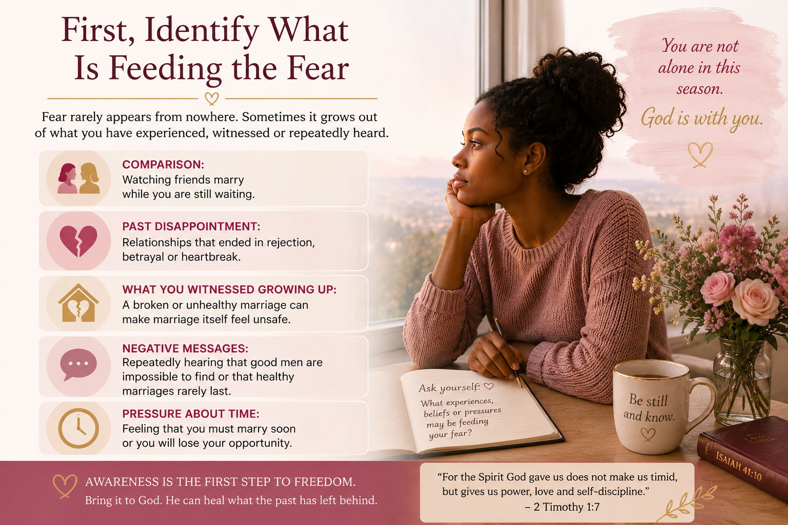

“What if I never meet the right person?”
“What if I’m meant to be alone forever?”
If you have ever asked yourself questions like these, you are not alone. The desire for marriage can be beautiful, but when marriage seems to be taking longer than expected, that desire can become mixed with fear.
You watch friends get engaged. Another wedding invitation arrives. Someone announces a pregnancy. And before long, you begin wondering, “Will my turn ever come?”
The fear of never finding a husband can bring loneliness, discouragement and even desperation. But fear does not have to decide how you live this season—or whom you eventually choose to marry.
Why This Fear Can Become So Powerful
The fear of never getting married is often connected to two things: uncertainty about whether you will find the right person and the feeling that time is running out.
You may find yourself comparing your life with women around you. You may wonder whether you are wasting your “best years.” And if the fear becomes strong enough, you may feel pressure to accept a relationship simply because you are afraid another opportunity may not come.
Fear can make the wrong relationship look better than waiting.
That is why this fear needs to be confronted before it begins making decisions for you.
First, Identify What Is Feeding the Fear
Fear rarely appears from nowhere. Sometimes it grows out of what you have experienced, witnessed or repeatedly heard.
- Comparison: Watching friends marry while you are still waiting.
- Past disappointment: Relationships that ended in rejection, betrayal or heartbreak.
- What you witnessed growing up: A broken or unhealthy marriage can make marriage itself feel unsafe.
- Negative messages: Repeatedly hearing that good men are impossible to find or that healthy marriages rarely last.
- Pressure about time: Feeling that you must marry soon or you will lose your opportunity.
Identifying the source matters because you cannot effectively challenge a fear you have never examined.

Don't Let Fear Convince You to Settle
One of the greatest dangers of the fear of never marrying is that it can change your standards.
A relationship you once knew was unhealthy can suddenly seem acceptable because you are tired of waiting. Serious concerns about a man's character, faith or maturity may begin to look less important when the alternative feels like remaining single.
But marriage is too important a decision to make from desperation.
There is also another side to fear. Some women become so afraid of choosing wrongly or being hurt that they keep every potential relationship at a distance. Fear can therefore push you toward the wrong man—or keep you from seriously considering a good one.
The goal is not simply to “find somebody.” The goal is to approach marriage with faith, wisdom and discernment.
What Can You Do With This Fear?
Breaking free from fear is not simply telling yourself to stop worrying. It requires intentional action.
1. Take the fear to God
Create quiet space to pray honestly about what you are afraid of. Write down the thoughts that repeatedly trouble you and ask God for wisdom and healing.
2. Renew your mind
Pay attention to the messages shaping your view of marriage. Replace fear-filled assumptions with biblical truth and examples of healthy, Christ-centered marriages.
3. Seek wise counsel
If your fear is rooted in painful experiences or deep emotional wounds, consider speaking with a trusted Christian counselor, pastor or mature mentor who can help you process them.
4. Don't walk alone
Surround yourself with believers who can encourage you, pray with you and remind you that your current season is not the whole story of your life.
Use the Waiting Season—Don't Just Endure It
If marriage has not happened yet, your life is not on hold.
This can be a season to grow spiritually and emotionally, heal from previous relationships, develop healthier expectations, learn to recognize godly character, strengthen your community and become better prepared for marriage.
Waiting wisely is different from waiting passively.
You can trust God while also taking practical steps to prepare yourself and create opportunities to meet people. You can desire marriage deeply without allowing that desire to become desperation.
“For the Spirit God gave us does not make us timid, but gives us power, love and self-discipline.” — 2 Timothy 1:7
Your Fear Does Not Have to Write Your Future
Perhaps you cannot answer today exactly when you will marry or who you will marry. Uncertainty is part of what makes waiting difficult.
But you can decide that fear will not control your choices.
You do not need to rush into the wrong relationship because you are afraid of being alone. And you do not need to close your heart to every possibility because you are afraid of being hurt.
Instead, keep growing. Keep praying. Keep learning. Seek wise counsel when you need it. And approach relationships from a place of faith and wisdom rather than fear.
Don't let the fear of never finding a husband lead you to choose the wrong husband.
The person you marry matters far more than simply being able to say that you are married.
WANT TO GO DEEPER?
Prepare Wisely for the Marriage You Desire
If fear, waiting, uncertainty or the question of how to recognize the right man is part of your journey, we wrote Single and Searching?: The Lady's Guide to Find and Attract the Right Husband — Practical Wisdom for Ladies Preparing for Marriage to help single women approach marriage with faith, wisdom and intentionality.
The book goes deeper into fear, preparation for marriage, recognizing the right kind of man, examining expectations and navigating the journey toward marriage wisely.
You can desire marriage without allowing fear to control the journey.

— Dr. Michael Agronah & Dr. Mary Agronah
Beautiful Marriage Garden